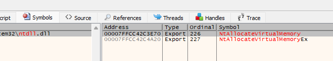
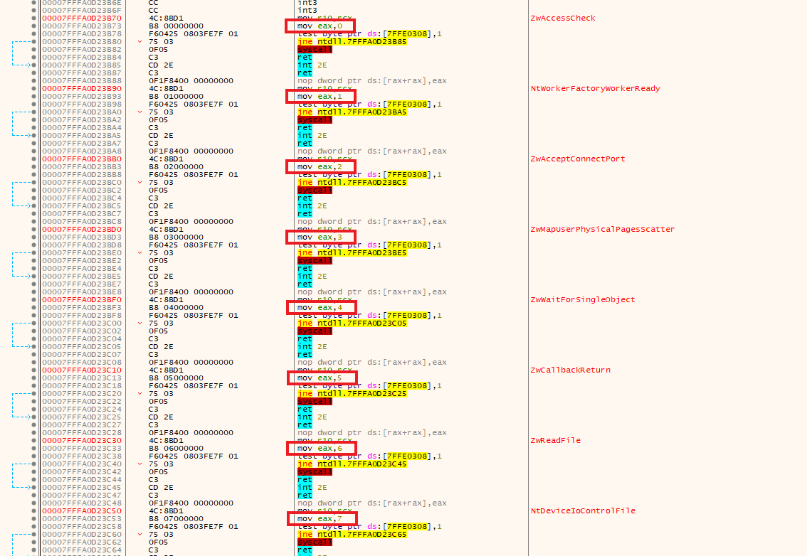
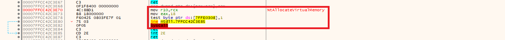
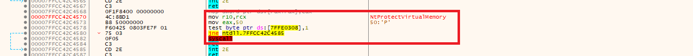
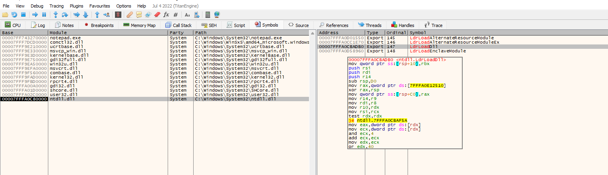

What Are Syscalls
Windows system calls or syscalls serve as an interface for programs to interact with the system, enabling them to request specific services such as reading or writing to a file, creating a new process, or allocating memory. Recall from the introductory modules that syscalls are the APIs that carry out the actions when a WinAPI function is called. For example, the NtAllocateVirtualMemory syscall is triggered when either VirtualAlloc or VirtualAllocEx WinAPIs functions are called. This syscall then moves the parameters provided by the user in the previous function call to the Windows kernel, carries out the requested action and returns the result to the program.
All syscalls return an NTSTATUS Value that indicates the error code. STATUS_SUCCESS (zero) is returned if the syscall succeeds in performing the operation.
The majority of syscalls are not documented by Microsoft, therefore the syscall modules will reference the documentation shown below.
NTDLL & Syscalls
The majority of syscalls are exported from the ntdll.dll DLL.
Why Use Syscalls
Using system calls provides low-level access to the operating system, which can be advantageous for executing actions that are not available or more complex to accomplish with standard WinAPIs. For example, the NtCreateUserProcess syscall provides additional options when creating processes that CreateProcess WinAPI can't.
Additionally, syscalls can be used for evading host-based security solutions which will be discussed in upcoming modules.
Zw vs Nt Syscalls
There are two types of syscalls, ones that start with Nt and others with Zw.
NT syscalls are the primary interface for user-mode programs. These are the system calls that are typically used by most Windows programs.
Zw syscalls on the other hand are a low-level, kernel-mode interface to the operating system. They are typically used by device drivers and other kernel-mode code that needs direct access to the operating system's functionality.
To summarize, Zw syscalls are used in kernel mode in device driver development, whereas the Nt system calls are executed from user-mode programs. Although it is possible to use both from user mode programs and still achieve the same result. This can be noticed in the below images, where both the Zw and Nt versions of the same syscall share the same function address.

For the sake of simplicity in this handbook, only Nt system calls will be used.
Syscall Service Number
Every syscall has a special syscall number, which is known as System Service Number or SSN. These syscall numbers are what the kernel uses to distinguish syscalls from each other. For example, the NtAllocateVirtualMemory syscall will have an SSN of 24 whereas NtProtectVirtualMemory will have an SSN of 80, these numbers are what the kernel uses to differentiate NtAllocateVirtualMemory from NtProtectVirtualMemory.
Differing SSNs By OS
It is important to be aware that SSNs will differ depending on the OS (e.g. Windows 10 vs 11) and within the version itself (e.g. Windows 11 21h2 vs Windows 11 22h2). Using the same example mentioned above, NtAllocateVirtualMemory may have an SSN of 24 on one version of Windows whereas on another version it will be 34. The same would apply to NtProtectVirtualMemory as well as the rest of the syscalls.
Syscalls In Memory
Within a machine, SSNs are not completely arbitrary and have a relation to one another. Each syscall number in memory is equal to the previous SSN + 1. For example, the SSN of syscall B is equal to the SSN of syscall A plus one. This is also true when approaching the syscall from the other end, where the SSN of syscall C will be that of syscall D minus one.
This relation is shown in the following image where the SSN of ZwAxxessCheck is 0 and the SSN of the next syscall, NtWorkerFactoryWorkerReady is 1 and so on.

Understanding that the syscalls have a relation to one another will come in handy for evasion purposes in upcoming syscall modules.
Syscall Structure
The syscall structure is generally the same and will look like the snippet shown below.
mov r10, rcx
mov eax, SSN
syscallFor example, NtAllocateVirtualMemory on a 64-bit system is shown below.

And NtProtectVirtualMemory is shown below.

Syscall Instructions Explained
The first line of the syscall moves the first parameter value, saved in RCX, to the R10 register. Subsequently, the SSN of the syscall is moved to the EAX register. Finally, the special syscall instruction is executed.
The syscall instruction on 64-bit systems or sysenter on 32-bit systems, are the instructions that initiate the system call. Executing the syscall instruction will cause the program to transfer control from user mode to kernel mode. The kernel will then perform the requested action and return control to the user mode program when completed.
Test & Jne Instructions
The test and jne instructions are for WoW64 purposes which are meant to allow 32-bit processes to run on a 64-bit machine. These instructions do not affect the execution flow when the process is a 64-bit process.
Not All NtAPIs Are Syscalls
It is important to note that while some NtAPIs return NTSTATUS, they are not necessarily syscalls. These NtAPIs may instead be lower-level functions that are used by WinAPIs or syscalls. The reason why certain NtAPIs are not classified as syscalls is due to their non-compliance with the structure of a syscall, such as not having a syscall number or the lack of the usual mov r10, rcx instruction at the start. An example of NtAPIs that are not syscalls is shown below.
LdrLoadDll - This is used by the LoadLibrary WinAPI to load an image to the calling process.SystemFunction032 and SystemFunction033 - These NtAPIs were introduced earlier and perform RC4 encryption/decryption operations.RtlCreateProcessParametersEx - This is used by the CreateProcess WinAPI to create arguments of a process.LdrLoadDll
LdrLoadDll's instructions are shown below. Notice how it does not follow the typical syscall structure.
